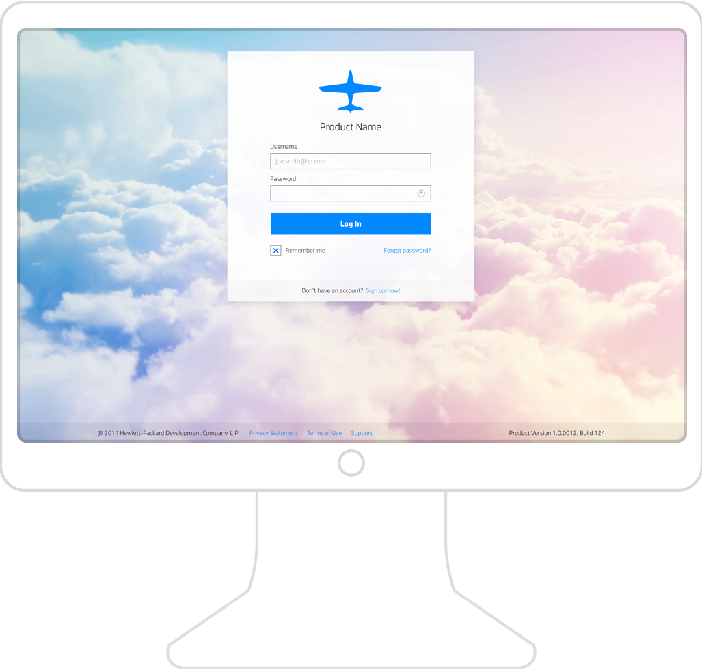

Typically the first thing a user does on a login screen is enter
their username. So it makes sense to place focus on the username
field so that it is ready and active. There should be no cognitive
effort required to use our login screen.

The mobile login page has the same look and feel, but is sized
accordingly. The dialog portion of the screen occupies the full
width of the screen. The footer information becomes stacked as
necessary. There is no scrolling on the login page.

General
Upon entering page, the page focus is placed in the username field.
The user can then mouse, tab on the keyboard, or tap to the password
field.
Expected elements
The company logo should be present on the login pages.
Alternatively, if a product has an approved product logo, then it
can be used instead of the company logo.
The product name or application name is also prominent on the
login page, immediately below the logo.
Next are the username and password fields.
Finally, the Login button should big and visible. It should be
the default button for the form so the user can press Enter on the
keyboard to login.
Handling the Unexpected
Should the user tap on the Login button before entering their
username or password, red error messages should be displayed
indicating one or both of the fields requires input.
In the case that the authentication sequence fails, for security
reasons the error message cannot indicate which field was
incorrectly entered. The message must simply state that the
username or password were not recognized.
Optional elements
The following fields are optional and can be used based on the
needs of the application.
- Forgot username
- allows a user to request assistance locating their username.
- Forgot password
- allows the user to request assistance resetting their password.
- Remember me
- allows a user to indicate they want the application to remember
their login information to the extent allowed by the security
requirements of the application.
- Sign up
- for applications which allow users to sign up for access, this
link should take them to a page that either creates an account or
submits a request for an account to be created.
- Footer
- contains the copyright, product version, terms of use, and
privacy references.
- Background image
- most applications should include a background image for visual
appeal. However, if there are constraints, it is acceptable to
use a solid light gray background.
Variations
Given the diverse nature of applications, there are a few
variations available for the login page. The first example shows
the login page without a background image. The background image is
gratuitous and is not required. Applications that have limited space
resources (such as embedded devices) may adopt such a style to keep
the resource demands to a minimum.

Here’s an example of the simple login screen on mobile devices.

Finally, this shows a product example. In this example, notice
there are fewer options on the login dialog. There are no “Remember me”,
“Forgot Password?”, or “Don’t have an account?” links. These features
are not required.

Another variation of the login page allows for the login target to
be specified. As an example, when logging into the Helion Eucalyptus
application, the user must select the login target, either the Eucalyptus
service or Amazon Web Services. Such context may need to be presented
on the login screen.
This should not be confused with an Active Directory domain field.
We recommend combining any directory service into the single login field
either via an email address or a “domain\username” format.
Mobile
As shown in the examples, the login page on mobile should respond to
the screen size and orientation appropriately. It is important to put
the focus in the username field and the keyboard should be open. In
addition, select the appropriate type of keyboard based on the format
of your username field. If the format is an email address, open the
email keyboard.
Accessibility
The user must be able to navigate the login page without the use of
a pointing device on a desktop. If there is an error on input, there
shall be red text that provides error feedback.